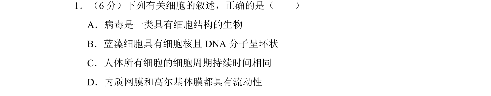
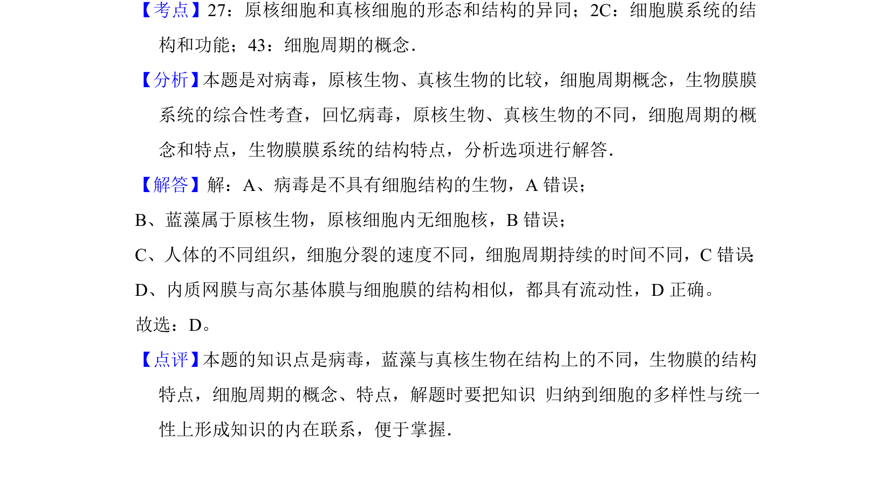

考点：病毒 原核细胞 细胞周期 细胞膜流动性

本题通过辨析病毒、蓝藻、细胞周期和生物膜等结构，考查细胞结构与功能的基础知识。

📄 原 PDF 第 6 页：
素材/真题/吉林/2008-2024·（吉林）生物高考真题/2010年高考生物试卷（新课标）（解析卷）.pdf
1．（6分）下列有关细胞的叙述，正确的是（ ） A．病毒是一类具有细胞结构的生物 B．蓝藻细胞具有细胞核且DNA分子呈环状 C．人体所有细胞的细胞周期持续时间相同 D．内质网膜和高尔基体膜都具有流动性
【考点】27：原核细胞和真核细胞的形态和结构的异同；2C：细胞膜系统的结 构和功能；43：细胞周期的概念．菁优网版权所有 【分析】 本题是对病毒，原核生物、真核生物的比较，细胞周期概念，生物膜膜 系统的综合性考查，回忆病毒，原核生物、真核生物的不同，细胞周期的概 念和特点，生物膜膜系统的结构特点，分析选项进行解答． 【解答】解：A、病毒是不具有细胞结构的生物，A错误； B、蓝藻属于原核生物，原核细胞内无细胞核，B错误； C、人体的不同组织，细胞分裂的速度不同，细胞周期持续的时间不同，C错误 ； D、内质网膜与高尔基体膜与细胞膜的结构相似，都具有流动性，D正确。 故选：D。 【点评】 本题的知识点是病毒，蓝藻与真核生物在结构上的不同，生物膜的结构 特点，细胞周期的概念、特点，解题时要把知识 归纳到细胞的多样性与统一 性上形成知识的内在联系，便于掌握．